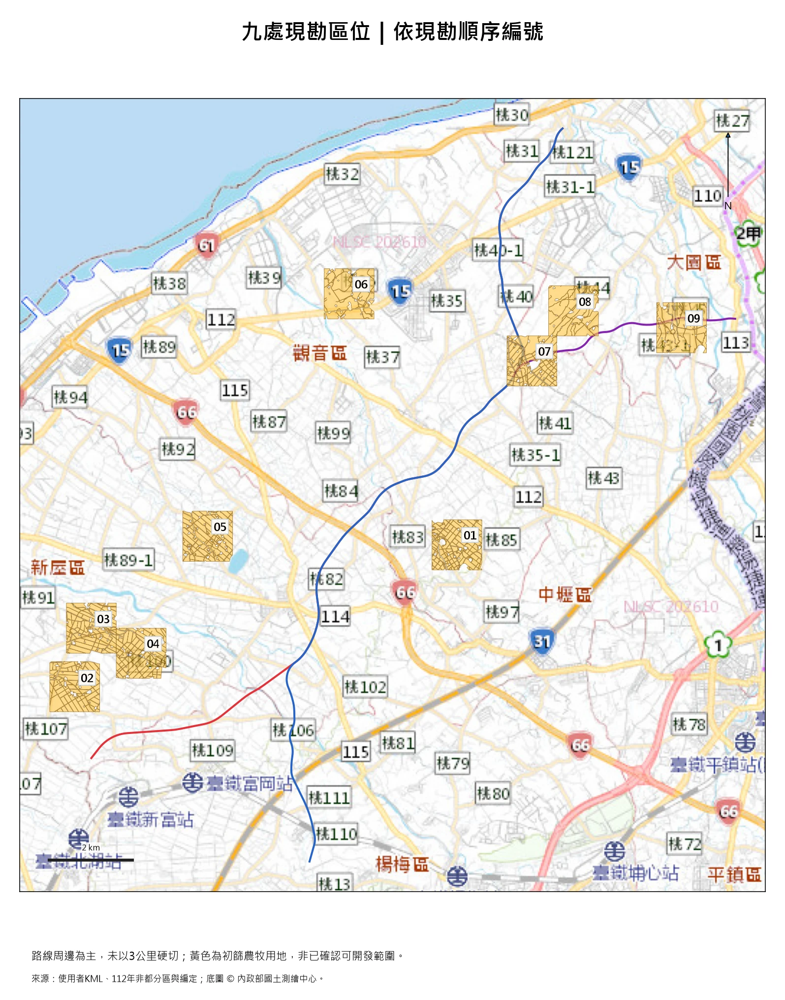
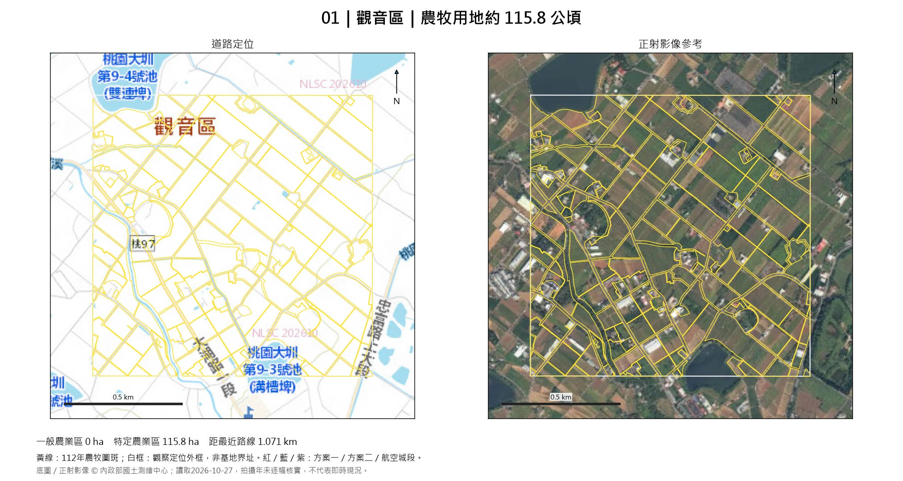
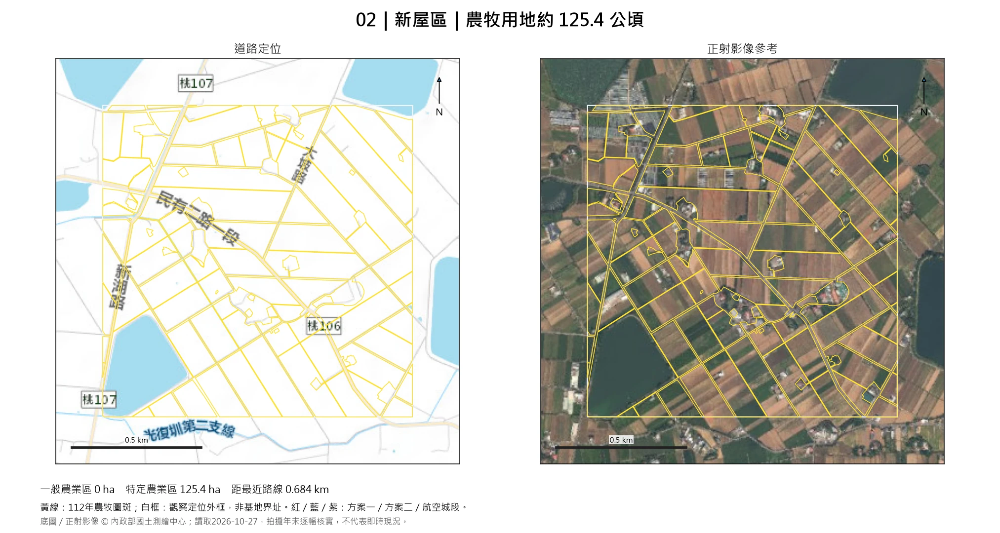
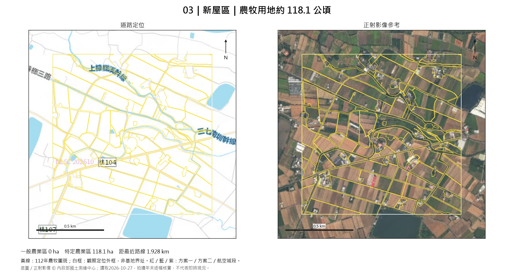
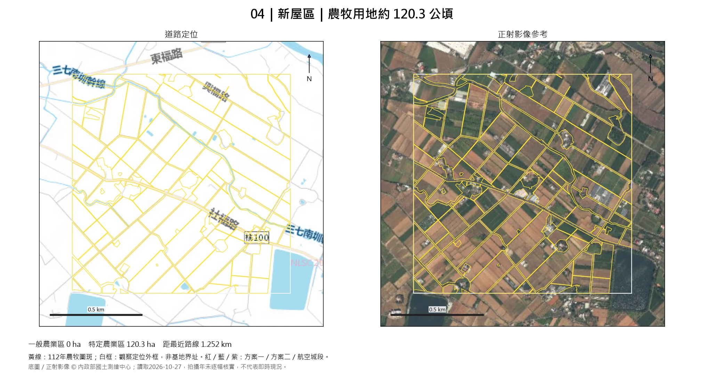
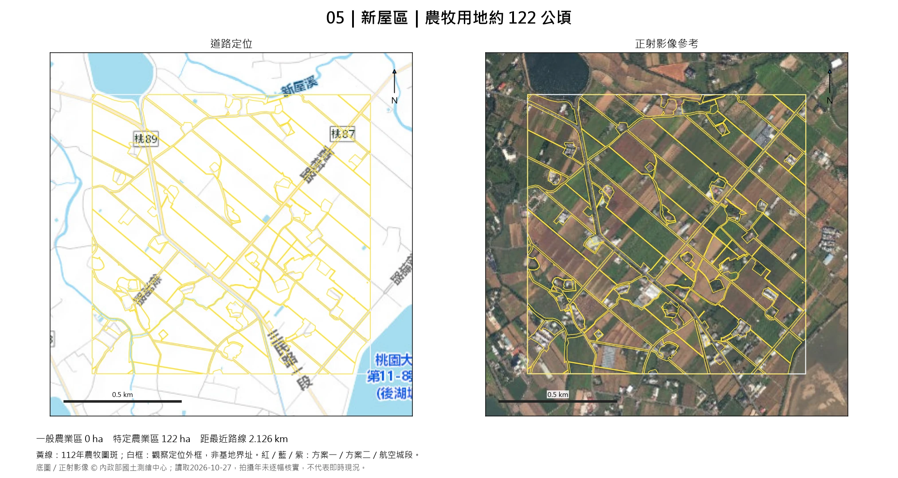
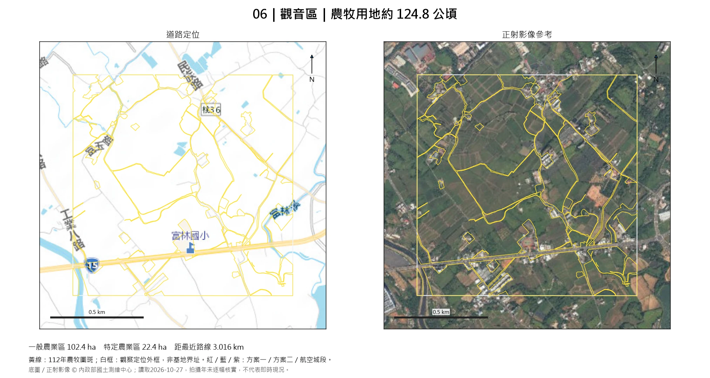
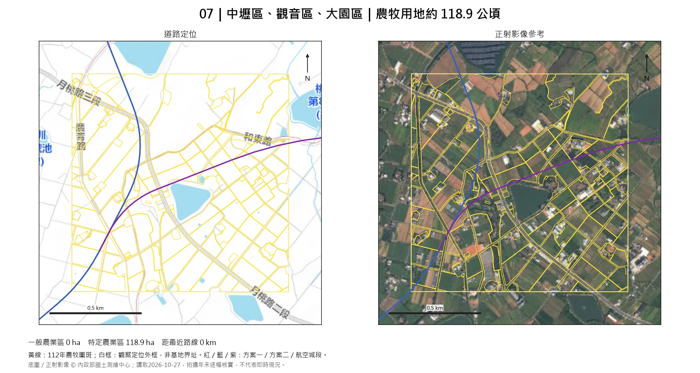
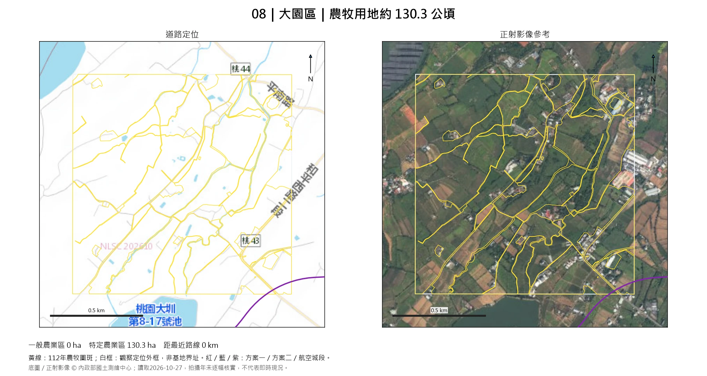
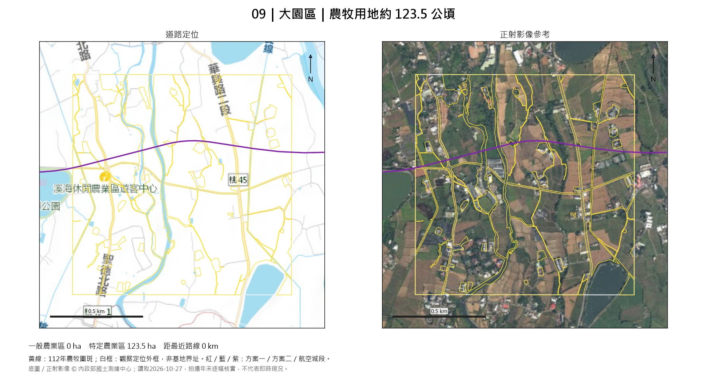

筆記儲存在目前瀏覽器，可匯出備份。
9處依現勘順序編號
約1,099公頃112年農牧用地圖資面積，非可開發面積
90公頃單處保留下限
現勘動線
桃園市政府 → 01 → 02 → 03 → 04 → 05 → 06 → 07 → 08 → 09 → A18高鐵桃園站 → 桃園市政府
候選區位總覽

點圖可開啟原圖。定位點為範圍代表點，不是入口。現勘清單與筆記
| 編號 | 區位／現勘重點 | 農牧用地約ha | 一般／特農約ha | 距路線約km | 筆記 |
|---|---|---|---|---|---|
| 觀音｜桃97線周邊農地帶 較集中耕地與地方道路可供踏查；西側建物、北側水體及灌排需確認。 | 115.8 | 0／115.8 | 1.1 | ||
| 新屋｜桃106、桃107線周邊 較規整農田集中，地方道路可定位；西南埤塘及中央聚落應避開。 | 125.4 | 0／125.4 | 0.7 | ||
| 新屋｜桃104線周邊農地帶 農田分布連續、建物多沿道路；需確認聚落繞避、排水及南側水體關係。 | 118.1 | 0／118.1 | 1.9 | ||
| 新屋｜桃100線周邊農地帶 成片耕地具觀察規模；中央散布使用及道路切割需確認。 | 120.3 | 0／120.3 | 1.3 | ||
| 新屋｜桃89線周邊農地帶 大面積耕地較集中；邊緣聚落、灌排與通行道路需確認。 | 122 | 0／122 | 2.1 | ||
| 觀音｜桃36線、富林國小北側 中央農地較集中，外緣聚落及南側道路需避開；距路線約3公里仍保留完整觀察。 | 124.8 | 102.4／22.4 | 3.0 | ||
| 中壢・觀音・大園交界｜月桃路周邊 路線交會附近有成片農田，聯外關係值得查看；內部埤塘及散布建物需避開。 | 118.9 | 0／118.9 | 0.0 | ||
| 大園｜桃43、桃44線周邊 農牧圖斑集中、地方道路可定位；樹木現用、灌排與東側散布使用為重點。 | 130.3 | 0／130.3 | 0.0 | ||
| 大園｜桃45線、航空城段周邊 航空城段穿越周邊農地，農田較成片；西側排水、道路切割與南側水體需現場確認。 | 123.5 | 0／123.5 | 0.0 |
01 觀音｜桃97線周邊農地帶

現勘重點：較集中耕地與地方道路可供踏查；西側建物、北側水體及灌排需確認。
現勘筆記
02 新屋｜桃106、桃107線周邊

現勘重點：較規整農田集中，地方道路可定位；西南埤塘及中央聚落應避開。
現勘筆記
03 新屋｜桃104線周邊農地帶

現勘重點：農田分布連續、建物多沿道路；需確認聚落繞避、排水及南側水體關係。
現勘筆記
04 新屋｜桃100線周邊農地帶

現勘重點：成片耕地具觀察規模；中央散布使用及道路切割需確認。
現勘筆記
05 新屋｜桃89線周邊農地帶

現勘重點：大面積耕地較集中；邊緣聚落、灌排與通行道路需確認。
現勘筆記
06 觀音｜桃36線、富林國小北側

現勘重點：中央農地較集中，外緣聚落及南側道路需避開；距路線約3公里仍保留完整觀察。
現勘筆記
07 中壢・觀音・大園交界｜月桃路周邊

現勘重點：路線交會附近有成片農田，聯外關係值得查看；內部埤塘及散布建物需避開。
現勘筆記
08 大園｜桃43、桃44線周邊

現勘重點：農牧圖斑集中、地方道路可定位；樹木現用、灌排與東側散布使用為重點。
現勘筆記
09 大園｜桃45線、航空城段周邊

現勘重點：航空城段穿越周邊農地，農田較成片；西側排水、道路切割與南側水體需現場確認。
現勘筆記
圖資與檔案
三份使用者KML、112年桃園非都分區及編定；底圖／正射影像 © 內政部國土測繪中心 EMAP、PHOTO2。
已核對既有CAD參考幾何及中央管河川參考圖資；未涵蓋所有現行計畫或限制，不能以沒有相交作為無限制的結論。